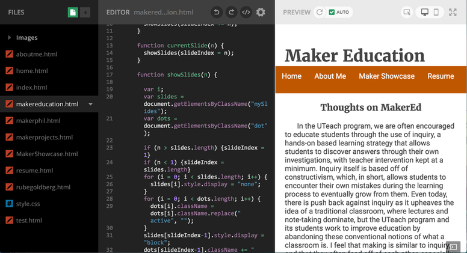
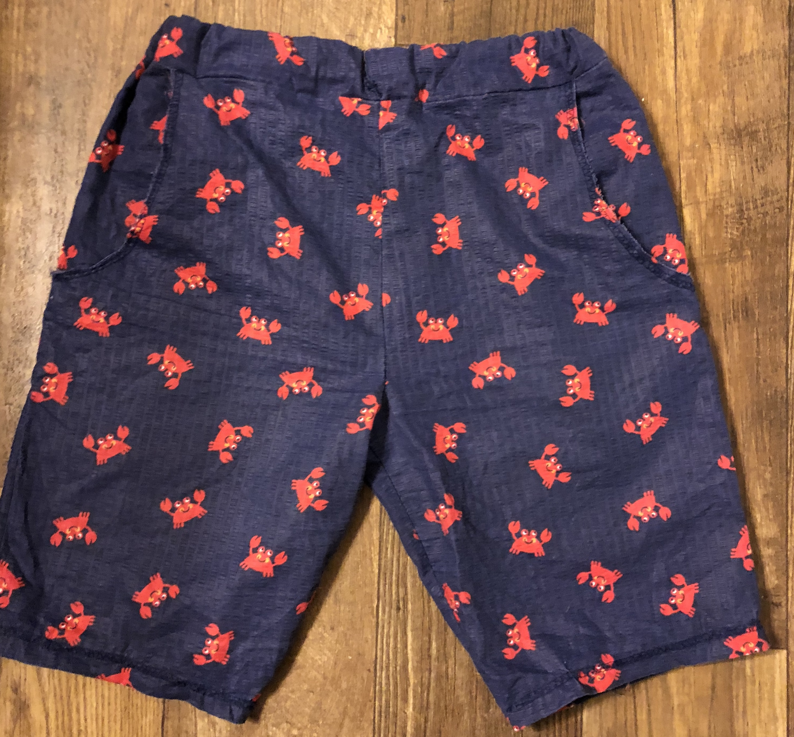
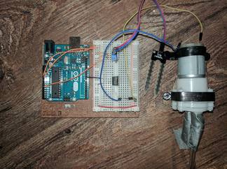
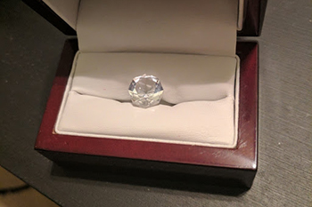

I've been working on some stuff here and there, and on this page is where I'll compile my various projects. There will be pictures and some comments on how the project evolved, along with future plans for the project, if any. Stay tuned!
I consider this website that you're on right now as one of my maker projects! Everything you see was built from the ground up with HTML, CSS, and JavaScript I've created on my own, with the help of some excellent tutorials I've found online (namely, w3schools.com). For the maker showcase, it's required that we compile our maker endeavors into a website, and while certain website-making programs are available (like wix and weebly), I thought it might be fun to learn some HTML and make the website on my own! Using Thimble IDE, I designed this really simple website that I can also use as a professional website to showcase my work or post about my future classroom.
To me, this a maker project because it checks all the boxes of what I consider to be making. In making this website, I made a "physical" product, utilized some creativity and design, and learned a lot along the way. Using what I've learned, I can improve my website, helped students or peers make their own websites, and use the what I learned to further move into studying scripting languages and more. I hope to get my website to look a lot nicer in the future, along with trying to make it mobile-compatible. In addition, I think it might be interesting to include some server-side scripting languages like PHP to make something like a blog, where I can post interesting maker articles and the like.
Recently, I’ve been taking up sewing as a hobby, and in it, I see a lot of the aspects of making. Not only am I creating something with my hands, but I’m learning a lot during the process. Because making is all about upcycling and accessibility, I started by using old fabric that people were going to throw away or donate. I drafted patterns by looking at clothes I already owned and measuring each piece of the clothing to cut new cloth. By doing this, I was able to make things like a pool bag, pajama pants, and the shorts pictured to the right! Making my own clothes has always been something I’ve been interested, but the Maker movement empowered me to face the first few failures head-on and learn from them enough to create something unique.
This maker project is a bit different form the others because it involves decidedly less STEM, but I can see many ways this could be a learning experience in a mathematics class. I did a lot of measuring during this project, and I can imagine that a geometry topic involving areas, perimeters, diameters, and other mathematical measurements could be explored by students drafting their own clothing patterns, which they could then make if possible. The fashion design classes at the school I work at often use sewing machines, and I could see these two classes teaming up for a maker/PBI lesson that results in creative end products for all the students.
I have always been interested in gardening, but my track record for keeping plants alive is pretty abysmal. Whether I have whatever the opposite of a green thumb is or I'm just forgetful (probably the latter), my plants always end up dying. To remedy this, I thought, "why not have robots do it instead?" To this end, I began looking into how to make an Arduino water my plants for me. Luckily, in working with Arduinos prior to this project, I was able to modify a simply motor project I had into a moisture sensor-powered motor.
On Amazon, I was able to buy a 5-pack of Arduino compatible moisture sensors for very cheap, along with some aquarium tubing, a drip irrigation system, and a 12V water pump (which was also Arduino-compatible). I then programmed and set up the Arduino (wired as seen to the right) to turn on once the plants dipped below a certain arbitrary moisture level unit. Voila! I had a water pump that would take water from a bucket and deliver it to plants once the soil was deemed "not moist enough" for the plants. Pretty simple enough for an Arduino project! Since it's ill-advised to keep electronics exposed to the elements, I bought a small latch box from a craft store and decorated it a bit with flower imagery to make my "Garduino" a bit more fun, while also protecting it from the elements. This project was really fun for me because it combined a lot fo my interests; I've always liked plants and plant biology, so reading up about the seasons in which certain plants grow and the optimal soil moisture for each plant was cool. Also, I love programming and robotics, so the Arduino was a great way to practice using automation in my day-to-day life. Lastly, I'm a hobby cook and I love making meals with really fresh ingredients! The first things I decided to grow were green onions and basil, so I'm hoping as I'm able to expand the Garduino system, I can have bigger plants like tomatoes, herbs, and other fruits and vegetables.
Though the Garduino is working, there are a lot of improvements I'd like to make. Firstly, I want to get a WiFi shield that would enable the Garduino to connect to the internet. This would allow me to set it up to where it can notify me of certain things, like if the water level of the bucket is too low or if the moisture detector isn't working. Also, I'd like to set it up to where there are multiple moisture sensors for each potted plant; for now, the Garduino just takes the moisture of one plant and assumes all the plants have a similar level of moisture. By improving the Garduino, it would be able to account for plants that need different optimal soil moistures.
As part of my teaching certification, I had to take two geology classes. For my second course, I opted to take a class called gems and gem minerals, where we studied the geology of many gem-quality minerals and organic compounds. As a final project for the class, all the students had to cut their own gem provided by the geology department. We used faceting machines that were handmade by a now-retired geology professor that were so intricate that we had to be careful not to change anything at all between faceting sessions. It was all a really interesting project, and the product was a beautifully polished gem that I got to keep!
This project was really interesting to me because not only was I creating a really cool gem, but I was also witnessing what I thought of as a form of maker education. We had been exposed to a lot of material and vocabulary regarding gems in lecture, but it really came together when doing hands-on making. Projects like these can definitely further interest in a subject while also letting them create something amazing and reinforce their knowledge that they learned in the classroom.